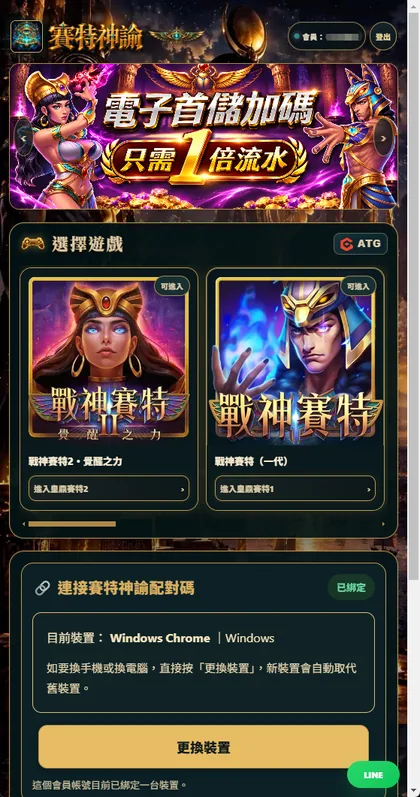

目前展示的遊戲
戰神賽特一代、戰神賽特二代、虎小妹、古神巴風特、惡魔血域、孫行者、赤三國、武俠。
如何進入
在賽特神諭系統的選擇遊戲畫面找到名稱，使用該遊戲入口。
關於支援狀態
官網列出的遊戲入口不等同於所有進房與分析功能均完成驗證；遇到問題請聯繫客服。

遊戲攻略一次整理目前官網列出的八款遊戲名稱。
戰神賽特一代、戰神賽特二代、虎小妹、古神巴風特、惡魔血域、孫行者、赤三國、武俠。
在賽特神諭系統的選擇遊戲畫面找到名稱，使用該遊戲入口。
官網列出的遊戲入口不等同於所有進房與分析功能均完成驗證；遇到問題請聯繫客服。